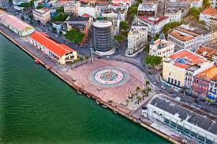
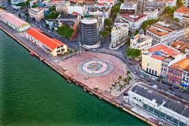

Marco zero - Centro do Recife
 

O Marco Zero é um monumento geográfico localizado na Praça da Sé e tem o formato hexagonal, com cada um dos seus
lados apontando para uma região.
É a partir do Marco Zero que se conta a numeração de todas as ruas da cidade e a quilometragem de todas as
rodovias do Estado.
Conheça outros pontos turísticos no Recife antigo